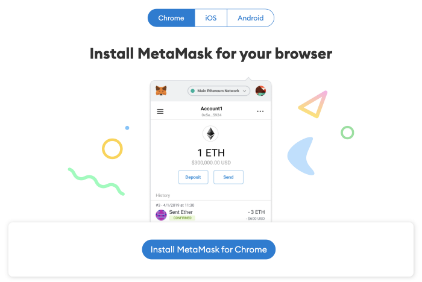
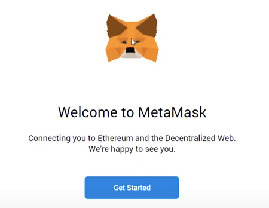
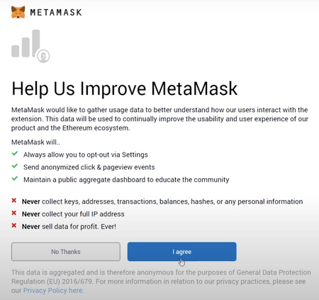
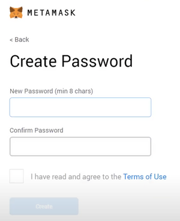
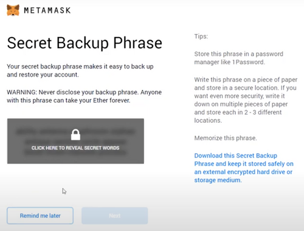
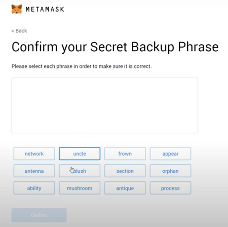
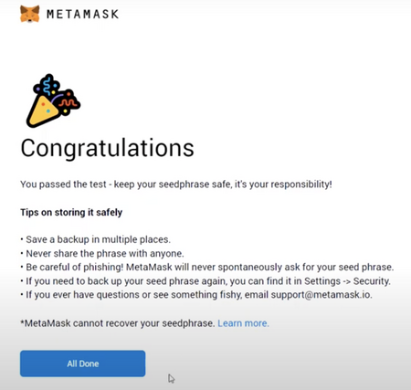

Cum interacționez cu blockchain-ul?
MetaMask este o interfață pentru portofel de crypto tokens (jetoane crypto) folosit pentru a interacționa cu blockchain-ul.
Pasul 1: Descărcați portofelul MetaMask
Accesați https://metamask.io/ și faceți clic pe „Download now”. Alegeți browserul sau aplicația mobilă preferată și instalați extensia MetaMask. În acest tutorial vom parcuge generarea unui portofel cu ajutorul extensiei MetaMask in browserul Chrome prin butonul „Install MetaMask for Chrome”.

Pasul 2: Instalați portofelul MetaMask
Faceți clic pe extensia MetaMask și faceți clic pe „Get Started”.

Puteți fie să importați un portofel existent folosind expresia seed, fie să creați unul nou.

Pasul 3 : Cum să creați un portofel nou MetaMask
Faceți clic pe „Create a Wallet” și în fereastra următoare faceți clic pe „I agree” dacă doriți să ajutați la îmbunătățirea MetaMask sau faceți clic pe „No thanks” pentru a continua.

Pasul 4: Creați o parolă puternică pentru portofel

Pasul 5: Stocați în siguranță expresia semințelor pentru portofelul nou
Faceți clic pe „CLICK HERE TO REVEAL SECRET WORDS” pentru a afișa expresia semințelor inițială.
• MetaMask necesită să stocați expresia semințelor într-un loc sigur. Este singura modalitate de a vă recupera fondurile în caz de blocare a dispozitivului sau de resetare a browserului. Vă recomandăm să o notați. Cea mai obișnuită metodă este să scrieți fraza de 12 cuvinte pe o bucată de hârtie și să o păstrați în siguranță într-un loc în care numai proprietarul are acces. Notă: dacă vă pierdeți expresia inițială, MetaMask nu vă poate ajuta să vă recuperați portofelul, iar tokenurile vor fi pierdute pentru totdeauna.
• Nu împărtășiți niciodată expresia semințelor sau cheia privată nimănui sau oricărui site, cu excepția cazului în care doriți ca aceștia să aibă control deplin asupra tokenurilor.

Faceți clic pe „Next”.
Pasul 6: Confirmarea expresiei semințelor
Confirmați expresia semințelor secretă de rezervă făcând clic pe fiecare cuvânt în ordinea în care au fost prezentate cuvintele pe ecranul anterior. Faceți clic pe „Confirm” pentru a continua.

Pasul 7: Confirmare generare cu succes a portofelului prin interfata MetaMask

Acum vă puteți accesa portofelul făcând clic pe pictograma MetaMask din colțul din dreapta sus al browserului.